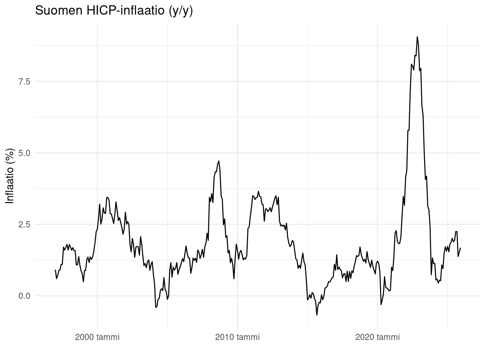
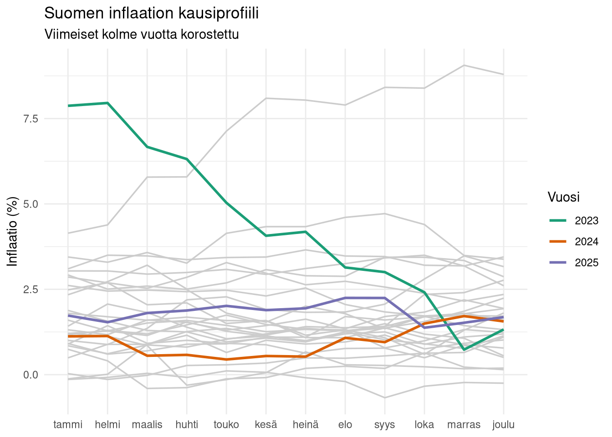
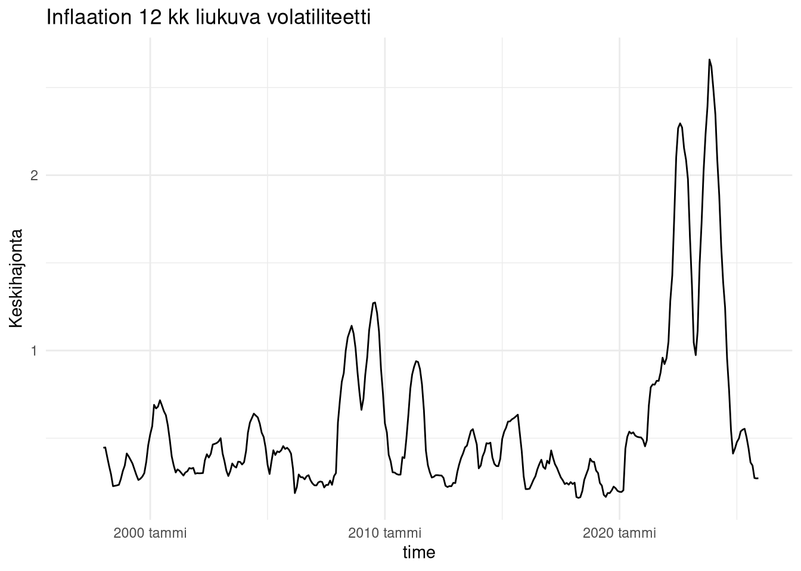

indexed 0B in 0s, 0B/s
indexed 40.89MB in 0s, 203.85MB/s
indexed 41.03MB in 0s, 203.95MB/s
indexed 41.16MB in 0s, 204.07MB/s
indexed 41.29MB in 0s, 204.30MB/s
indexed 41.42MB in 0s, 204.33MB/s
indexed 41.55MB in 0s, 204.36MB/s
indexed 41.68MB in 0s, 204.50MB/s
indexed 41.81MB in 0s, 204.54MB/s
indexed 41.94MB in 0s, 204.56MB/s
indexed 42.07MB in 0s, 203.98MB/s
indexed 42.20MB in 0s, 204.15MB/s
indexed 42.34MB in 0s, 204.01MB/s
indexed 42.47MB in 0s, 204.11MB/s
indexed 42.60MB in 0s, 204.24MB/s
indexed 42.73MB in 0s, 204.26MB/s
indexed 42.86MB in 0s, 204.39MB/s
indexed 42.99MB in 0s, 204.46MB/s
indexed 43.12MB in 0s, 204.60MB/s
indexed 43.25MB in 0s, 204.80MB/s
indexed 43.38MB in 0s, 204.81MB/s
indexed 43.52MB in 0s, 205.01MB/s
indexed 43.65MB in 0s, 205.04MB/s
indexed 43.78MB in 0s, 205.03MB/s
indexed 43.91MB in 0s, 205.02MB/s
indexed 44.04MB in 0s, 205.02MB/s
indexed 44.17MB in 0s, 205.17MB/s
indexed 44.30MB in 0s, 205.32MB/s
indexed 44.43MB in 0s, 205.52MB/s
indexed 44.56MB in 0s, 205.61MB/s
indexed 44.70MB in 0s, 205.76MB/s
indexed 44.83MB in 0s, 205.83MB/s
indexed 44.96MB in 0s, 205.77MB/s
indexed 45.09MB in 0s, 205.75MB/s
indexed 45.22MB in 0s, 205.49MB/s
indexed 45.35MB in 0s, 205.50MB/s
indexed 45.48MB in 0s, 205.51MB/s
indexed 45.61MB in 0s, 205.54MB/s
indexed 45.74MB in 0s, 205.57MB/s
indexed 45.87MB in 0s, 205.61MB/s
indexed 46.01MB in 0s, 200.25MB/s
indexed 46.14MB in 0s, 200.35MB/s
indexed 46.27MB in 0s, 200.49MB/s
indexed 46.40MB in 0s, 200.53MB/s
indexed 46.53MB in 0s, 200.65MB/s
indexed 46.66MB in 0s, 200.69MB/s
indexed 46.79MB in 0s, 200.70MB/s
indexed 46.92MB in 0s, 200.73MB/s
indexed 47.05MB in 0s, 200.85MB/s
indexed 47.19MB in 0s, 201.06MB/s
indexed 47.32MB in 0s, 201.16MB/s
indexed 47.45MB in 0s, 201.20MB/s
indexed 47.58MB in 0s, 201.41MB/s
indexed 47.71MB in 0s, 201.49MB/s
indexed 47.84MB in 0s, 201.61MB/s
indexed 47.97MB in 0s, 201.63MB/s
indexed 48.10MB in 0s, 201.77MB/s
indexed 48.23MB in 0s, 201.80MB/s
indexed 48.37MB in 0s, 201.81MB/s
indexed 48.50MB in 0s, 201.81MB/s
indexed 48.63MB in 0s, 201.66MB/s
indexed 48.76MB in 0s, 201.70MB/s
indexed 48.89MB in 0s, 201.82MB/s
indexed 49.02MB in 0s, 201.95MB/s
indexed 49.15MB in 0s, 202.07MB/s
indexed 49.28MB in 0s, 202.19MB/s
indexed 49.41MB in 0s, 202.28MB/s
indexed 49.54MB in 0s, 202.25MB/s
indexed 49.68MB in 0s, 202.29MB/s
indexed 49.81MB in 0s, 202.33MB/s
indexed 49.94MB in 0s, 202.39MB/s
indexed 50.07MB in 0s, 202.52MB/s
indexed 50.20MB in 0s, 202.65MB/s
indexed 50.33MB in 0s, 202.80MB/s
indexed 50.46MB in 0s, 202.87MB/s
indexed 50.59MB in 0s, 203.00MB/s
indexed 50.72MB in 0s, 179.91MB/s
indexed 50.86MB in 0s, 180.00MB/s
indexed 50.99MB in 0s, 180.07MB/s
indexed 51.12MB in 0s, 180.07MB/s
indexed 51.25MB in 0s, 180.17MB/s
indexed 51.38MB in 0s, 180.31MB/s
indexed 51.51MB in 0s, 180.45MB/s
indexed 51.64MB in 0s, 180.60MB/s
indexed 51.77MB in 0s, 180.74MB/s
indexed 51.90MB in 0s, 180.91MB/s
indexed 52.04MB in 0s, 181.07MB/s
indexed 52.17MB in 0s, 181.24MB/s
indexed 52.30MB in 0s, 181.42MB/s
indexed 52.43MB in 0s, 181.54MB/s
indexed 52.56MB in 0s, 181.67MB/s
indexed 52.69MB in 0s, 181.82MB/s
indexed 52.82MB in 0s, 181.97MB/s
indexed 52.95MB in 0s, 182.09MB/s
indexed 53.08MB in 0s, 182.27MB/s
indexed 53.21MB in 0s, 182.42MB/s
indexed 53.35MB in 0s, 182.48MB/s
indexed 53.48MB in 0s, 182.58MB/s
indexed 53.61MB in 0s, 182.69MB/s
indexed 53.74MB in 0s, 182.82MB/s
indexed 53.87MB in 0s, 182.97MB/s
indexed 54.00MB in 0s, 183.14MB/s
indexed 54.13MB in 0s, 183.24MB/s
indexed 54.26MB in 0s, 183.38MB/s
indexed 54.39MB in 0s, 183.52MB/s
indexed 54.53MB in 0s, 183.69MB/s
indexed 54.66MB in 0s, 183.86MB/s
indexed 54.79MB in 0s, 184.03MB/s
indexed 54.92MB in 0s, 184.20MB/s
indexed 55.05MB in 0s, 184.36MB/s
indexed 55.18MB in 0s, 184.50MB/s
indexed 55.31MB in 0s, 184.67MB/s
indexed 55.44MB in 0s, 184.76MB/s
indexed 55.57MB in 0s, 184.88MB/s
indexed 55.71MB in 0s, 185.04MB/s
indexed 55.84MB in 0s, 185.16MB/s
indexed 55.97MB in 0s, 185.34MB/s
indexed 56.10MB in 0s, 185.48MB/s
indexed 56.23MB in 0s, 185.63MB/s
indexed 56.36MB in 0s, 185.79MB/s
indexed 56.49MB in 0s, 185.96MB/s
indexed 56.62MB in 0s, 186.11MB/s
indexed 56.75MB in 0s, 186.20MB/s
indexed 56.88MB in 0s, 186.13MB/s
indexed 57.02MB in 0s, 186.28MB/s
indexed 57.15MB in 0s, 186.37MB/s
indexed 57.28MB in 0s, 186.51MB/s
indexed 57.41MB in 0s, 186.67MB/s
indexed 57.54MB in 0s, 186.79MB/s
indexed 57.67MB in 0s, 186.95MB/s
indexed 57.80MB in 0s, 187.07MB/s
indexed 57.93MB in 0s, 187.21MB/s
indexed 58.06MB in 0s, 187.35MB/s
indexed 58.20MB in 0s, 187.45MB/s
indexed 58.33MB in 0s, 187.57MB/s
indexed 58.46MB in 0s, 187.70MB/s
indexed 58.59MB in 0s, 187.82MB/s
indexed 58.72MB in 0s, 187.74MB/s
indexed 58.85MB in 0s, 187.86MB/s
indexed 58.98MB in 0s, 187.99MB/s
indexed 59.11MB in 0s, 188.11MB/s
indexed 59.24MB in 0s, 188.24MB/s
indexed 59.38MB in 0s, 188.38MB/s
indexed 59.51MB in 0s, 188.52MB/s
indexed 59.64MB in 0s, 188.66MB/s
indexed 59.77MB in 0s, 188.80MB/s
indexed 59.90MB in 0s, 188.94MB/s
indexed 60.03MB in 0s, 189.05MB/s
indexed 60.16MB in 0s, 189.18MB/s
indexed 60.29MB in 0s, 189.29MB/s
indexed 60.42MB in 0s, 189.43MB/s
indexed 60.55MB in 0s, 189.55MB/s
indexed 60.69MB in 0s, 189.59MB/s
indexed 60.82MB in 0s, 189.73MB/s
indexed 60.95MB in 0s, 189.85MB/s
indexed 61.08MB in 0s, 189.96MB/s
indexed 61.21MB in 0s, 190.07MB/s
indexed 61.34MB in 0s, 190.19MB/s
indexed 61.47MB in 0s, 190.30MB/s
indexed 61.60MB in 0s, 190.37MB/s
indexed 61.73MB in 0s, 190.47MB/s
indexed 61.87MB in 0s, 190.62MB/s
indexed 62.00MB in 0s, 190.73MB/s
indexed 62.13MB in 0s, 190.83MB/s
indexed 62.26MB in 0s, 190.96MB/s
indexed 62.39MB in 0s, 190.88MB/s
indexed 62.52MB in 0s, 190.94MB/s
indexed 62.65MB in 0s, 190.99MB/s
indexed 62.78MB in 0s, 191.09MB/s
indexed 62.91MB in 0s, 191.22MB/s
indexed 63.05MB in 0s, 191.34MB/s
indexed 63.18MB in 0s, 191.48MB/s
indexed 63.31MB in 0s, 191.57MB/s
indexed 63.44MB in 0s, 191.66MB/s
indexed 63.57MB in 0s, 191.73MB/s
indexed 63.70MB in 0s, 191.85MB/s
indexed 63.83MB in 0s, 191.95MB/s
indexed 63.96MB in 0s, 192.07MB/s
indexed 64.09MB in 0s, 192.20MB/s
indexed 64.22MB in 0s, 192.06MB/s
indexed 64.36MB in 0s, 192.13MB/s
indexed 64.49MB in 0s, 192.25MB/s
indexed 64.62MB in 0s, 192.36MB/s
indexed 64.75MB in 0s, 192.47MB/s
indexed 64.88MB in 0s, 192.58MB/s
indexed 65.01MB in 0s, 192.70MB/s
indexed 65.14MB in 0s, 192.81MB/s
indexed 65.27MB in 0s, 192.94MB/s
indexed 65.40MB in 0s, 193.04MB/s
indexed 65.54MB in 0s, 193.14MB/s
indexed 65.67MB in 0s, 193.28MB/s
indexed 65.80MB in 0s, 193.36MB/s
indexed 65.90MB in 0s, 193.25MB/s
indexed 1.00TB in 0s, 2.93TB/s
Osa 1 — Inflaatio ei ole luku vaan se on prosessi
R
Data Science
talous
inflaatio
ennustaminen
Mediassa inflaatiota käsitellään usein pelkkänä yhtenä lukuna. Se ei kuitenkaan ole pelkkä yksittäinen luku, vaan prosessi, joka sisältää jakauman ja virherajat.
Tämän moniosaisen blogipostauksen tarkoituksena on käydä läpi talouteen ja erityisesti inflaatioon liittyviä datalähteitä sekä näillä tehtäviä ennusteita ja miten ennusteet syntyvät.
Ennustamisen kohteena on Suomen kuluttajintainflaation vuosimuotos eli HICP. Datan kerään Eurostatilta, joka on Euroopan unionin tilastokeskus.
Kirjoita tähän väliin selitystä:

Tähän väliin tekstiä:
# A tibble: 1 × 2
kpss_stat kpss_pvalue
<dbl> <dbl>
1 0.246 0.1Kausivaihtelu:

Volatiliteetti ei ole vakio:
